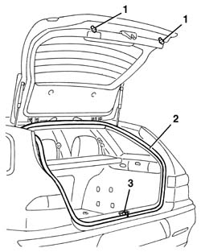

7015A10 tailgate - adjust striker and adapt seal if necessary
- Path
- Procedures > 70 FITTINGS > 7015 TAILGATE/ > 7015A tailgate assembly > 7015A10 tailgate - adjust striker and adapt seal if necessary
- Kind
- repair procedure (removal / refitting; the operation number is the code)
- Applies to
- all engines; all production periods
- Interactive page
- https://sloeber94.github.io/elrnDB-a156/en/#/3238705
Applies to: all engines; all production periods; only with equipment: Station Wagon
Open the tailgate.
1. Check that the buffers are working properly.
2. Check that the tailgate housing seal is correctly positioned.
7015A30 tailgate compartment seal - r+r .
3. If necessary, adjust the position of the lock striker.
7015B18 tailgate lock striker - r+r .

Applies to: all engines; all production periods; only with equipment: Station Wagon
If the checks/adjustments described in the previous points are not sufficient, 7015A14 tailgate - adjust centring and profile - includes hinge and compartment seal adaptation .